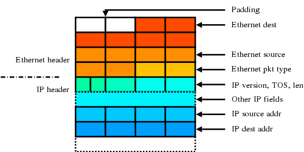

On the alignment of IP packets
skb_reserve(skb, 2);
This call tells the socket buffer code to set aside the first two bytes of the data buffer. The reason why this is done can be seen by looking at the resulting layout of an IP packet in the buffer:

The network stack makes frequent use of the IP addresses stored in the packet. By padding the beginning of an ethernet-style packet by two bytes, a network driver can cause those addresses to be aligned on a four-byte boundary. On some architectures, at least, that alignment will speed access to the addresses and make the networking system faster.
Or so it might seem. As Anton Blanchard recently figured out, this padding is not always helpful. A number of modern architectures (Anton works with PPC64, but Intel-style architectures qualify too) have no real problem with unaligned memory accesses, so the two-byte offset on IP packets does not necessarily help things. Unfortunately, the DMA engines in a number of systems do have trouble working with unaligned addresses. A padded packet buffer does not start on an aligned address, with the result that DMA operations to that buffer can be slower than they should be. As network adapters get faster, the DMA performance penalty becomes increasingly significant.
Anton's proposal was to change the skb_reserve() calls into calls to a new skb_align() function, which could, depending on the architecture, decide whether to insert the padding or not. David Miller pointed out, however, that the magic constant "2" appears in quite a few places, and simply removing the padding could create bugs elsewhere in the driver code.
The real solution is likely to be the
addition of a defined constant called
something like NET_IP_ALIGN; this constant would be the amount of
padding needed for packet alignment on the current architecture. Yes,
things probably should have been done that way from the beginning, but life
is like that. In any case, once the constant is in, each individual driver
can be looked over and fixed up as need be. And one small obstacle to top
performance on high-end network adapters will have been removed.
| Index entries for this article | |
|---|---|
| Kernel | Internet protocol |
| Kernel | Networking |
| Kernel | skb_reserve() |
Posted Jun 17, 2004 11:49 UTC (Thu)
by debacle (subscriber, #7114)
[Link] (1 responses)
Posted Jun 17, 2004 13:06 UTC (Thu)
by corbet (editor, #1)
[Link]
Posted Jun 20, 2004 7:35 UTC (Sun)
by yohahn (guest, #4107)
[Link]
Posted Jul 11, 2007 13:23 UTC (Wed)
by striata (guest, #20737)
[Link]
Not a comment, but a question: Which diagram editorWhich diagram editor?
did you use for the IP packet diagram? dia?
Yes, it was done with dia.
Which diagram editor?
Having once timed a few network cards for use on an embeded system where CPU speed was scarce, the DMA speed has a significant effect on performance. The cards that couldn't do the non-DWORD aligned DMA had a significant disadvantage. (i.e. the cheaper ones..)
On the alignment of IP packets
i wonder why windows has no such requirement, is this alignment requirement anytime soon going to be removed (the word aligned iphdr start). ? On the alignment of IP packets